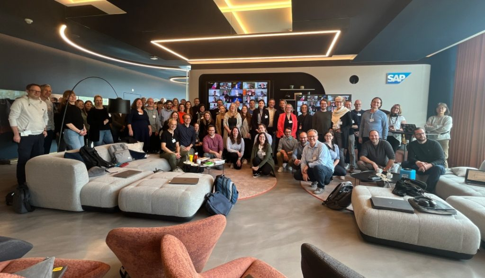

Mehr als nur Technologie - Wie menschzentrierte KI Akzeptanz und Mehrwert schafft
Mehr als nur Technologie: Wie menschzentrierte KI Akzeptanz und Mehrwert schafft
Als jemand, der sich seit vielen Jahren mit Lernen in Organisationen, Change Management und Technologietransformation beschäftigt, war für mich schnell klar: Die Einführung generativer KI ist weit mehr als ein IT-Projekt. Es geht um Menschen, um Kultur, um neue Formen des Lernens -- und genau hier setzt meine Verbindung zur Corporate Learning Community (CLC) an.
Ich bin schon lange Teil dieser besonderen Community -- sei es durch den Austausch auf BarCamps, durch Gespräche im CLC-Podcast oder durch Formate wie dem CLC Promptathon 2024, den ich mit Begeisterung mit organisiert habe. Gerade dieser Promptathon war für mich ein Aha-Erlebnis: In einem hybriden Setting haben wir gemeinsam ausprobiert, wie generative KI konkret im Arbeitsalltag unterstützen kann. Es war ein echter Peer-Learning-Prozess -- offen, co-kreativ, experimentell mit einer sehr positiven Stimmung im Raum. Genau dieses erlebnisorientierte Lernen, das in der CLC seit jeher praktiziert wird, halte ich für entscheidend, wenn wir von KI-Adoption sprechen.
Was ich in der CLC immer wieder erlebe, ist: Lernen entsteht durch Austausch, durch Reflexion, durch das gemeinsame Machen. Und das gilt auch für KI. Nur wer selbst ausprobiert, wer mit anderen Erfahrungen teilt und gemeinsam Lösungen entwickelt, kann das volle Potenzial heben -- für sich persönlich und für die Organisation.
Diese Erfahrungen haben mich in meiner Überzeugung bestärkt, dass die menschzentrierte Gestaltung von KI-Initiativen kein „Nice-to-have" ist, sondern ein zentraler Erfolgsfaktor. Die Rolle der CLC als Raum für Reflexion, als Experimentierfeld und als Brücke zwischen Theorie und Praxis ist dabei für mich von unschätzbarem Wert. In diesem Artikel möchte ich deshalb meine Perspektive auf die vier entscheidenden Faktoren für erfolgreiche KI-Adoption teilen -- mit einem besonderen Fokus auf den Menschen im Zentrum der Veränderung.
Generative KI entwickelt sich mit einer krassen Geschwindigkeit und verändert die Art, wie wir arbeiten, lernen und kommunizieren. Doch während Unternehmen immer mehr in KI-Technologie investieren, bleibt der erhoffte Produktivitätsschub oft aus. Neben dem Theorie-Praxis Gap gibt es zudem die Pilot-Falle: Unternehmen führen erfolgreiche Einzelprojekte durch, schaffen aber nie den Sprung zur unternehmensweiten Skalierung.
Die Herausforderung liegt nicht primär in der Implementierung der Technologie, sondern in der Akzeptanz und effektiven Nutzung durch die Menschen in der Organisation.
Unternehmen, die KI-Projekte rein technisch betrachten, scheitern häufig an mangelnder Nutzung und Akzeptanz. Neudeutsch wird dies auch als Adoption benannt. Der Schlüssel dazu liegt in einem integrierten, menschenzentrierten Ansatz, der folgende vier Komponenten umfasst:
-
Human-Centered Design Mindset & Practices
-
Organizational Change Management
-
Learning and Enablement (AI Upskilling)
-
Technical Support & Consulting
Weiterbildung und Lernen, wie es in der Corporate Learning Community praktiziert wird, ist hier eines der wesentlichen Elemente. Daneben ist natürlich eine fundierte Strategie notwendig, mit klarer Zielsetzung und strukturiertem Vorgehen, Blick auf die technologische Plattform und Architektur, Nutzung hochwertiger Daten mit der richtigen Semantik und dem passenden Kontext, sowie die Berücksichtigung von Governance, Ethik und Regulierung -- auch „verantwortungsvolle KI" genannt. Im Artikel möchte ich mich jedoch dem Thema Adoption, Nutzung & Akzeptanz widmen. Was machen diese vier Faktoren aus?
![Die vier Bereiche und Faktoren (Quelle: Thomas Jenewein), Die Grafik zeigt ein Haus aus bunten Bausteinen im Lego-Format. Auf dem Dach weht eine blaue Fahne mit dem Text: „AI Adoption building blocks", das heisst \"Bausteine für die Einführung von Künstlicher Intelligenz\". Die bunten Bausteine stehen für vier Bereiche: Türkis: Human centered Design, also Mensch-zentriertes Design, Pink: Technical Support & Consulting, also Technischer Support und Beratung Lila: Organizational Change Management, also Veränderungsmanagement. Orange: Learning and Enablement, also Lernen und Befähigung.](../media/image124.png)
Komponente 1: Human-Centered Design Mindset & Practices
Im Kontext von KI bedeutet dies, die Bedürfnisse der Nutzenden in den Mittelpunkt zu stellen und von dort aus zu denken.
Für die Entwicklung einer KI-Strategie ist es entscheidend, aus der Vielzahl möglicher Anwendungsfälle diejenigen zu identifizieren und zu priorisieren, die echten Mehrwert bieten. Bewährte Design Thinking-Kriterien bieten hierfür einen strukturierten Rahmen:
-
Desirability: Können konkrete Probleme durch KI gelöst werden?
-
Feasibility: Ist eine technische Umsetzung möglich und sinnvoll?
-
Viability: Kann das Unternehmen von der Lösung profitieren?
Für die Auswahl geeigneter KI-Szenarien haben sich Formate wie Business AI Exploration & Discovery Workshops oder Business AI Design Workshops bewährt. Diese Methoden ermöglichen es, echte Nutzerbedürfnisse interdisziplinär zu identifizieren und passende Lösungsansätze zu entwickeln.
Ob Design Thinking, Co-Creation, iteratives Prototyping oder agiles Coaching -- entscheidend ist, dass der Nutzende im Zentrum steht und Lösungen aus seiner Perspektive gedacht werden. Die Bearbeitung realer Probleme mit echten Nutzerdaten legt den Grundstein für die spätere Akzeptanz und erfolgreiche Implementierung generativer KI. Zudem gibt es mehr Commitment und Motivation durch Einbindung -- sei es auch nur von Vertretern der Nutzer.
Komponente 2: Organizational Change Management
Jenseits der individuellen Perspektive bedeutet KI-Adoption stets auch organisatorischen Wandel. Die Erfahrung zeigt: Selbst technisch exzellente KI-Lösungen scheitern, wenn der Veränderungsprozess nicht systematisch gestaltet wird.
Für erfolgreiche Veränderungsprozesse sind drei Faktoren besonders relevant:
-
Klarheit, Transparenz und Mehrwert: Die Vorteile der neuen Technologie müssen für Organisationen, Teams und einzelne Rollen klar kommuniziert werden. Mitarbeitende müssen verstehen, wie die Technologie die Arbeit effizienter und besser macht. Oft werden Vorteile nur high level auf Management Ebene in Zahlen formuliert, was zu abstrakt ist und niemanden abholt.
-
Vertrauen und Benutzerfreundlichkeit: Das Design aus Nutzerperspektive und der einfache Zugang der KI-Anwendungen sind entscheidend. Vertrauen in die Tools gewinnt zunehmend an Bedeutung. Besonders bei KI sind vertrauensfördernde Maßnahmen wie Transparenz der Modelle, Klärung, was mit individuellen Daten geschieht, oder Überprüfung auf möglichen Bias wichtig.
-
Datengestützte Veränderungsbegleitung: Für eine erfolgreiche Transformation empfiehlt sich ein datengestützter Ansatz. Bewährt haben sich fünf Veränderungsdimensionen aus Nutzersicht: Awareness, Acceptance, Enablement, Empowerment und Commitment. Durch regelmäßiges Pulsfühlen dieser Dimensionen entlang der KI-Einführung kann der Fortschritt der KI-Adoption gemessen und bei Bedarf nachgesteuert werden.
Die technische Implementierung erfolgt dabei mit Tools für Prozessanalyse und -modellierung sowie systematischen Befragungen. Dies ermöglicht ein präzises Bild des Veränderungsfortschritts und gezielte Maßnahmen bei Akzeptanzproblemen.
Komponente 3: Learning and Enablement (AI Upskilling)
Eine der großen KI-Investitionen sind derzeit Umschulungen bzw. Weiterbildungen (Upskilling), gefolgt von der Automatisierung von Prozessen zur Steigerung der Produktivität und Kosteneffizienz.
Neben allgemeinem Verständnis und Kenntnissen verschiedener Tools ist die Kompetenz des Prompt Engineering von besonderer Bedeutung. Ich würde das weiter fassen und es als Handling von KI Tools wie Chatbots im eigenen Arbeitskontext sehen - oft wird dies auch als AI Literacy bezeichnet.
Darüber hinaus kann es hilfreich sein, fortgeschrittene Techniken wie Chaining oder Multi-Prompting zu erlernen. Menschliche Sprache ersetzt Programmiersprache, und mit generativer KI wird Low- oder No-Code-Entwicklung Realität.
Neben dem Erlernen von Grundlagenkompetenz geht es um den Einsatz generativer KI in der jeweiligen täglichen Arbeit. Für wichtige Zielgruppen wie Softwareentwicklung, F&E, Kundenservice, Marketing oder IT werden oft spezielle interne Akademien eingerichtet.
Da das Ziel des Upskilling immer Kompetenz wie die Implementierung oder Nutzung von KI-Tools ist, sollte KI-Training über Grundlagen hinausgehen. Es muss Praxis, Ausprobieren und Experimentieren, Reflexion und den Austausch mit anderen umfassen.
Hierfür eignen sich Ansätze aus dem Peer-Learning. Mögliche Methoden umfassen Workshops oder Hackathons, Promptathons genannt, oder Communities, bei denen job-relevante Herausforderungen gelöst werden. Jeder Job hat Aufgaben, bei denen generative KI helfen kann, wie bei schnellerer oder besserer Recherche, Inhaltserstellung einschließlich Zusammenfassung oder Übersetzung, Datenverarbeitung und -analyse, Softwareentwicklung und mehr.
Eine Möglichkeit des Peer Learning ist das der Lerngruppen oder Lernzirkel. Das lernOS-Framework beinhaltet beispielsweise einen KI-Lernleitfaden. Dieser strukturiert eine selbstgesteuerte Lernreise kleiner Gruppen mit Input und Übungen rund um KI. Damit wird Lernen am Arbeitsplatz ermöglicht, einschließlich der Analyse und Bearbeitung individueller Anwendungsfälle, und kann einfach und sogar relativ kostenneutral realisiert werden, beispielsweise im eigenen Team.
Bei der Gestaltung solcher praxisorientierter Lernformate sind laut eigener Erfahrung folgende Punkte zu beachten:
-
Nutzung zentraler Kommunikationstools, z. B. digitale Whiteboards
-
Analyse und Nutzung von Herausforderungen aus dem täglichen Arbeitsleben
-
Selbstorganisation fördern und fordern
-
Diversität der Skills in den Lerngruppen
-
Minimaler Input und maximale Praxis
-
Dokumentation und Reflexion der Ergebnisse und des Lösungswegs
Aufgrund der dynamischen Entwicklung im Bereich KI wird das kontinuierliche Lernen neuer KI Anwendungen und Modelle auch über 2025 hinaus sehr relevant sein. Auch hier eigenen sich Methoden aus dem Peer-Learning und dem erfahrungsbasierten Lernen.
Ethan Mollick meint treffend „The single most useful thing you can do to understand AI is to use AI" . Die Rolle von erfahrungsbasiertem Lernen ist ein Ansatz, der in der Corporate Learning Community (CLC) auch seit Jahren propagiert wird. So wurde 2024 unter der Flagge der CLC ein hybrider Promptathon durchgeführt, der Grundlage für die oben geschilderten Lernerfahrungen bildet. Darauf aufbauend haben die CLC Mitglieder Marcel Kirchner und Jochen Robes einen Leitfaden für Promptathons entwickelt. Austausch in Communities wie der CLC oder der benachbarten lernOS Community ist für Learning Experten ein wichtiges Lern- und Experimentierfeld. Im besten Fall entstehen, wie hier durch Co-Creation, sogar Werkzeuge, die der AI Adoption weiterhelfen.
Komponente 4: Technical Support & Consulting
Ich finde, auch der Dreiklang der SAP Strategie ist schlüssig:
-
Chatbots & conversational Interfaces, ob SAP Joule, ChatGPT, Gemini oder Claude, als Interface für die KI-gestützte Arbeit
-
In bestehende Software integrierte KI -- sei es der MS Copilot bei Microsoft oder verschiedene Use Cases in Unternehmenssoftware wie SAP SuccessFactors.
-
Das Entwickeln eigener Anwendungen und besonders Agenten zur Optimierung und Automatisierung von Arbeit.
Für die technische Unterstützung gibt es weitere Tools, die die Akzeptanz fördern. Dies sind z. B. Tools für Prozessmanagement, -analyse und -mining, für Zusammenarbeit und Kommunikation wie Enterprise Social Networks mit Wikis, Foren etc., Digital Adoption Plattformen zu Guidance, Monitoring & Automatisierung der Nutzererfahrung sowie Tools für Umfragen zur Messung der qualitativen Akzeptanz.
Wichtig ist hier ein Punkt: Einführung von KI sollte nicht mit alten Tools und Ansätzen gemacht werden, wie Powerpoint, Excel oder E-Mail. Hier sollte man auch immer schauen, wo bessere Tools und Ansätze oder sogar KI selbst genutzt werden kann. Im optimalen Fall nutzt man dies als Lernprojekt und entwickelt eigene Tools mit Vibe-Coding selbst.
Adoption, Adaption & Transformation
Neben den vier Dimensionen ist zudem auch der Unterschied zwischen Adoption, Adaption & Transformation zentral.
-
Adoption bedeutet die Akzeptanz und eigentliche Nutzung neuer KI-Technologien. Jedoch sollte man nicht nur bestehende Aufgaben schneller mit KI machen.
-
Adaption geht darüber hinaus: Arbeitsweisen, Aufgaben und Prozesse werden aktiv an die Technologie angepasst. Dies verlangt Veränderungsbereitschaft, Lernen und Experimentieren, um KI sinnvoll zu integrieren.
-
Transformation schließlich beschreibt den tiefgreifenden Wandel von Aufgaben, aber auch Geschäftsmodellen, Wertschöpfung und Rollen. KI ermöglicht Neues, zuvor nicht Dagewesenes und verändert damit Arbeit, Organisation und Zusammenarbeit.
![Das Adoption, Adaption, Transformation Modell (Quelle: Thomas Jenewein), Die Grafik erklärt den Unterschied zwischen Adoption und Adaption im Zusammenhang mit der Einführung neuer digitaler Lösungen. Linke Seite: Transformation: Es wird etwas ganz Neues geschaffen. Adaption: Vorhandene Aufgaben, Abläufe oder Einstellungen werden angepasst. Adoption: Die Nutzer*innen akzeptieren und verwenden das Neue -- es geht um die tatsächliche Nutzung und Produktivität. Rechte Seite: Ein farbiges Flussdiagramm zeigt, wie Menschen neue digitale Werkzeuge nutzen: Unten: Die Basis bilden Frameworks, Tools und Plattformen, unterstützt durch: Enablement, OCM und Technische Services. Von unten nach oben zeigen verschiedenfarbige Linien, wie sich die Nutzung entwickelt -- von Frustration bis hin zu Begeisterung: Frustration: Man nutzt das Tool nur, weil man muss. Confusion: Man ist unsicher bei der Nutzung. Curiosity: Man entdeckt das Tool. Confident Mastery: Man kann es gut nutzen. Advocacy: Man findet es so gut, dass man es weiterempfiehlt. Oben steht das Ziel: \"User & company goals/benefits\", also Vorteile für die Nutzer*innen und das Unternehmen.](../media/image125.png)
Diese drei Stufen sind zentrale Schritte eines Entwicklungsprozesses. Auf keinen Fall darf man auf der Stufe der reinen Nutzung stehen bleiben, will man das Potential von KI wirklich nutzen. Ähnlich sieht dies auch Josh Bersin (2025) in seinem Beitrag „die vier Stufen der KI Transformation" . Passend dazu fordert Ethan Mollicks (2025) Konzept „Leadership, Lab, and Crowd" für erfolgreiche KI-Transformation, den Gap zwischen Theorie und Praxis durch organisationale Lernprozesse zu überwinden.
Reflexion
Für die Implementierung generativer KI ist es sehr wichtig, dass jeder aktiv experimentiert und versucht, KI überall dort einzusetzen, wo es möglich ist. Wie beim Erlernen des Autofahrens kann man etwas darüber lesen -- aber um es wirklich zu beherrschen, muss man es erleben und üben.
Organisationen müssen daher nicht nur die Werkzeuge, sondern auch den Raum zum Lernen anbieten. Hier ist die CLC eine wertvolle Community zur Reflexion.
Neben dem Toolset ist es zudem hilfreich, Menschen für die KI-Nutzung zu belohnen und nicht zu bestrafen. Wenn Produktivitätsgewinne erzielt werden, müssen auch die Mitarbeiter davon profitieren. Psychologische Sicherheit ist oft der Schlüssel zur Bereitschaft, Innovationen zu teilen. Daher ist es nützlich, eine solche Kultur der psychologischen Sicherheit zu fördern, einschließlich des Lernens aus Fehlern und des Vorlebens durch Beispiel.
Ohne den Fokus auf Menschen werden KI-Implementierungen nicht nur weniger erfolgreich sein - sie können sogar schädlich sein. Verhindern wir dies und arbeiten wir gemeinsam an einem menschenzentrierten Einsatz von KI.
Literatur & Quellen
-
Bersin, Josh (2025): The Road To AI-Driven Productivity: Four Stages of Transformation. Abgerufen am 13.11.2025 unter https://joshbersin.com/2024/11/how-to-make-productivity-soar-four-stages-of-ai-transformation/
-
Jenewein, Thomas (2024): CLC Promptathon 2024 -- „Prompt in die Zukunft: Generative KI entdecken!", Corporate Learning Community/ Blog. Abgerufen am 13.11.2025 unter https://colearn.de/clc-promptathon-2024-prompt-in-die-zukunft-generative-ki-entdecken/
-
Jenewein, Thomas (2024): Generative Künstliche Intelligenz im Corporate Learning: Use Cases, Beispiele und Tips, SAP Training and Change Management Blog Posts. Abgerufen am 13.11.2025 unter https://community.sap.com/t5/sap-training-and-change-management/generative-k%C3%BCnstliche-intelligenz-im-corporate-learning-use-cases-beispiele/ba-p/13767754
-
Jenewein, Thomas (2025): AI Adoption: from technology to successful usage, acceptance to adaption and transformation, SAP Training and Change Management Blog Posts. Abgerufen am 13.11.2025 unter https://community.sap.com/t5/sap-training-and-change-management/ai-adoption-from-technology-to-successful-usage-acceptance-to-adaption-and/ba-p/13922954
-
Jenewein, Thomas; Haffner, Christoph: Education NewsCast, SAP Podcasts. Abgerufen am 13.11.2025 unter https://podcast.opensap.info/education-newscast [hier reflektiere ich regelmäßig Themen rund um KI und hieraus stammen, neben konkreten Projekten, auch einige meiner Erkenntnisse]
-
lernOS KI Leitfaden. Künstliche Intelligenz für alle (2025). Abgerufen am 13.11.2025 unter https://ai.lernos.org/de/
-
Mollick, Ethan (2025): Making AI Work: Leadership, Lab, and Crowd. A formula for AI in companies. Abgerufen am 13.11.2025 unter https://www.oneusefulthing.org/p/making-ai-work-leadership-lab-and
-
Robes, Jochen; Kirchner Marcel (2024): Leitfaden für die Durchführung eines Promptathons. Abgerufen am 13.11.2025 unter https://colearn.de/promptathon-leitfaden/
